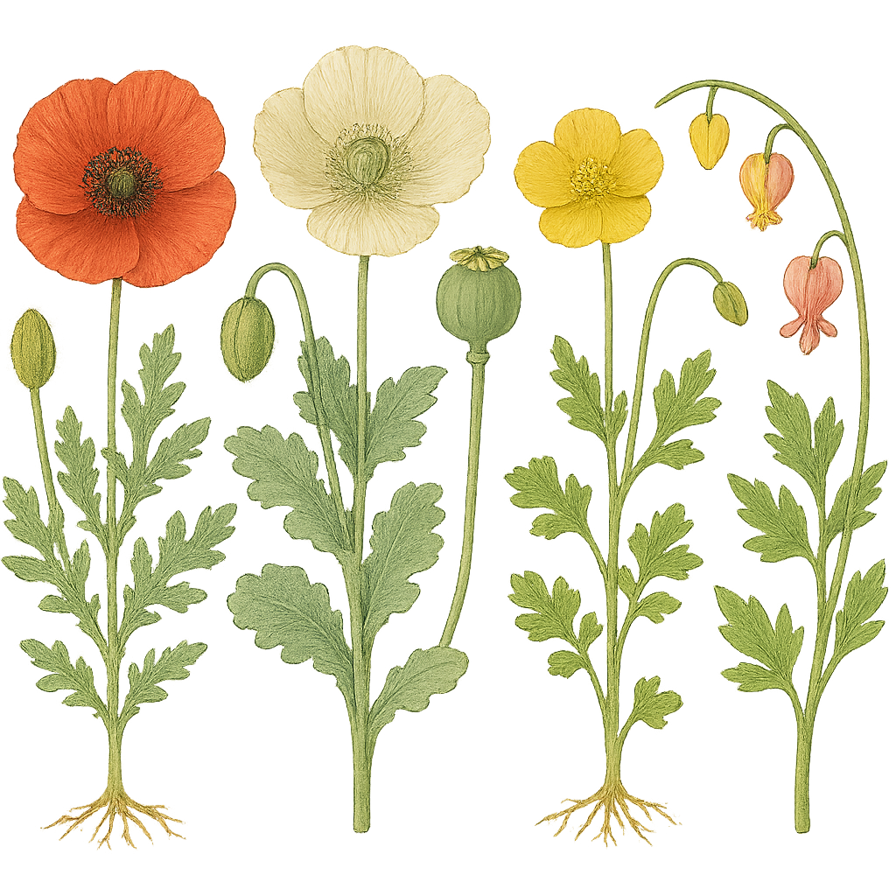

Papaveraceae
Poppy Family
Papaveraceae, the poppy family, is a family of eudicots in the order Ranunculales, comprising about 40-44 genera and 775-825 species. It primarily consists of annual or perennial herbs, known for often producing milky or colored latex and bearing showy flowers, typically with 2 sepals and 4 or more petals. The family, as now circumscribed, includes the former Fumariaceae family (fumitories, bleeding hearts). It has a nearly cosmopolitan distribution but is most diverse in temperate regions of the Northern Hemisphere.
Overview
The Poppy family is renowned for its vibrant and often delicate flowers, including familiar garden plants like poppies (Papaver), California poppies (Eschscholzia), and bleeding hearts (Dicentra, now often included in Lamprocapnos). A key characteristic of many members (subfamily Papaveroideae) is the presence of laticifers producing milky or colored sap (latex) when tissues are broken. This latex contains various alkaloids, some with potent medicinal or narcotic properties, most famously morphine from the opium poppy (Papaver somniferum).
Modern classifications, based on molecular data, include the former Fumariaceae family within Papaveraceae as the subfamily Fumarioideae. These plants (e.g., Corydalis, Dicentra, Fumaria) differ from typical poppies in lacking latex and having bilaterally symmetrical (zygomorphic) flowers, often with spurs, and typically only 6 stamens united into two groups.
Economically, the family is important for ornamental horticulture and as the source of opium poppy derivatives (morphine, codeine, poppy seeds). Several species are also considered weeds. Ecologically, many species are adapted to open or disturbed habitats, and some possess seeds with elaiosomes, facilitating dispersal by ants.
Quick Facts
- Scientific Name: Papaveraceae Juss.
- Common Name: Poppy Family
- Number of Genera: Approximately 40-44
- Number of Species: Approximately 775-825
- Distribution: Cosmopolitan, primarily temperate and subtropical Northern Hemisphere.
- Evolutionary Group: Eudicots - Basal Eudicots - Ranunculales
Key Characteristics
Growth Form and Habit
Predominantly annual or perennial herbs, often with basal rosettes of leaves. Some possess rhizomes, tubers, or taproots. Rarely shrubs or small trees (e.g., Bocconia, Dendromecon).
Latex
Plants typically contain articulated or non-articulated laticifers producing milky or colored latex (white, yellow, orange, red) - characteristic of subfamily Papaveroideae. Latex is absent in subfamily Fumarioideae.
Leaves
Leaves are usually alternate (sometimes opposite or whorled, especially in Fumarioideae), often deeply lobed, dissected, or compound (pinnately or ternately). Stipules are absent.
Inflorescence
Flowers are often solitary on long stalks (scapes or peduncles), or arranged in terminal or axillary cymes, racemes, or panicles.
Flowers
Flowers are usually showy, bisexual, and either actinomorphic (radially symmetrical - Papaveroideae) or zygomorphic (bilaterally symmetrical - Fumarioideae).
- Sepals: Typically 2 (sometimes 3), distinct, enclosing the bud, and characteristically caducous (falling off as the flower opens).
- Petals: Typically 4 in two whorls (sometimes 6, or 8-12), distinct, often large and crumpled in bud (Papaveroideae). In Fumarioideae, the 4 petals are fused or coherent in complex ways, with one or both outer petals often spurred or saccate (pouched). Colors are diverse: white, yellow, orange, scarlet, red, pink, purple, blue.
- Androecium: In Papaveroideae, stamens are usually numerous (20 to hundreds), distinct, with filaments sometimes petaloid. In Fumarioideae, stamens are typically 6, united into two bundles of three (diadelphous), opposite the outer petals.
- Gynoecium: The ovary is superior, composed of 2 to many fused carpels (syncarpous). It is usually unilocular with parietal placentation (ovules on the ovary wall), but sometimes multilocular with axile placentation. Ovules are usually numerous. The style is often short or absent; stigmas are distinct or fused into a sessile discoid structure capping the ovary (e.g., Papaver).
Fruits and Seeds
The fruit is typically a capsule that dehisces (opens) in various ways: commonly by pores below the stigmatic disc (poricidal capsule in Papaver), or by valves separating from the placental framework (e.g., Eschscholzia). In Fumarioideae, fruits can be capsules, small indehiscent nutlets, or loment-like fruits breaking into one-seeded segments. Seeds are generally small, often numerous, and sometimes possess an aril or elaiosome, an oily appendage attractive to ants for dispersal. Endosperm is present and oily.
Chemical Characteristics
The family is rich in isoquinoline alkaloids. Different genera and species produce distinct alkaloid profiles, including morphine, codeine, thebaine, papaverine (in Papaver somniferum), sanguinarine (in Sanguinaria), protopine, berberine (also found in Berberidaceae), and many others. These compounds contribute to the plants' medicinal uses and toxicity.
Field Identification
Identifying Papaveraceae involves looking for a combination of vegetative and floral traits, keeping in mind the differences between the two main subfamilies:
Primary Identification Features
- Habit: Mostly herbaceous plants.
- Latex: Presence of milky or colored sap when broken (Papaveroideae); latex absent (Fumarioideae).
- Leaves: Usually alternate, often lobed or dissected/compound.
- Flowers: Showy, with 2 caducous sepals and usually 4 petals (often crumpled in bud in Papaveroideae; spurred/saccate and zygomorphic in Fumarioideae).
- Stamens: Numerous (Papaveroideae) OR 6 in two bundles (Fumarioideae).
- Ovary: Superior, developing into a capsule (often poricidal in Papaver) or other fruit types (Fumarioideae).
Secondary Identification Features
- Flower Symmetry: Radially symmetrical (Papaveroideae) or bilaterally symmetrical (Fumarioideae).
- Petal Shape (Fumarioideae): Look for spurs or pouches on the outer petals.
- Stigmas (Papaver): Often form a distinctive discoid cap on the ovary/capsule.
- Habitat: Many species favor open, sunny, or disturbed ground.
- Seeds (some Fumarioideae): May have elaiosomes (small fleshy appendages).
Seasonal Identification Tips
- Spring/Summer: Main flowering season for most species. Look for characteristic flowers and developing fruits. Check for latex.
- Fall/Winter: Many species die back or persist as basal rosettes. Dried capsules (especially the "pepper-pot" capsules of Papaver) may remain visible.
Common Confusion Points
- Ranunculaceae (Buttercup Family): Also in Ranunculales. Flowers often have numerous stamens and superior ovaries, but typically have persistent sepals (often petaloid), usually 5 or more petals (or petals modified into nectaries), and fruits are usually follicles or achenes. Latex is absent.
- Brassicaceae (Mustard Family): Flowers have 4 petals, but also 4 sepals and typically 6 stamens (4 long, 2 short). Fruit is a silique or silicle. Latex absent.
- Cistaceae (Rock Rose Family): Flowers often have numerous stamens and crumpled petals (like some poppies), but typically have 5 persistent sepals and capsular fruit. Latex absent.
Field Guide Quick Reference
Look For:
- Habit: Mostly herbs
- Latex: Often present (milky/colored)
- Leaves: Alternate, often dissected
- Flowers: 2 caducous sepals, 4+ petals (often crumpled)
- Stamens: Numerous OR 6 in 2 bundles
- Ovary: Superior
- Fruit: Usually a capsule (often poricidal)
Key Variations (Subfamilies):
- Papaveroideae: Latex present, flowers radial, stamens numerous.
- Fumarioideae: Latex absent, flowers bilateral (often spurred), stamens 6 (diadelphous).
- Alkaloids present
- Many species are ornamental or medicinal
Notable Examples
The Papaveraceae family includes iconic flowers and medicinally important plants:

Papaver somniferum
Opium Poppy
An annual herb, likely originating from the eastern Mediterranean. Cultivated for millennia as the source of opium (dried latex) containing alkaloids like morphine and codeine, and also for its edible seeds (poppy seeds) used in baking. Flowers are large, typically lilac, white, or red, followed by a large poricidal capsule.

Papaver rhoeas
Common Poppy / Field Poppy
An annual herb native to Europe, North Africa, and temperate Asia, widely naturalized elsewhere. Famous for its bright scarlet flowers with dark basal spots, often found as a weed in agricultural fields. It's a symbol of remembrance, particularly in Commonwealth countries (Remembrance Poppy).

Eschscholzia californica
California Poppy
A perennial or annual herb native to western North America, the state flower of California. Known for its bright orange or yellow, cup-shaped flowers that close at night or in cloudy weather. Leaves are finely dissected and bluish-green. Produces clear or slightly yellowish latex. Fruit is a slender capsule that splits lengthwise.

Dicentra spectabilis (now Lamprocapnos spectabilis)
Bleeding Heart
A popular perennial garden plant native to eastern Asia (Fumarioideae subfamily). It has deeply dissected, fern-like leaves and arching stems bearing distinctive pink and white, heart-shaped, zygomorphic flowers with spurs. Lacks latex.

Corydalis spp.
Corydalis / Fumewort
A large genus (~470 species) in the Fumarioideae subfamily, found mostly in the Northern Hemisphere. They are herbs, often with tubers or rhizomes, finely dissected leaves, and racemes of spurred, zygomorphic flowers in various colors (yellow, blue, purple, pink, white). Many species contain alkaloids and some are used in traditional medicine or grown as ornamentals.
Phylogeny and Classification
Papaveraceae is placed in the order Ranunculales, one of the earliest diverging lineages of the eudicots. This order contains several families known for producing diverse alkaloids and often having numerous stamens or separate carpels.
Molecular phylogenetics has strongly supported the inclusion of the former family Fumariaceae (including genera like Dicentra, Corydalis, Fumaria) within Papaveraceae. Fumarioideae forms a distinct subfamily characterized by zygomorphic flowers, lack of latex, and 6 diadelphous stamens. The other main subfamily, Papaveroideae, includes the typical poppies and relatives with actinomorphic flowers, latex, and numerous stamens. Within Ranunculales, Papaveraceae is considered closely related to families like Lardizabalaceae, Circaeasteraceae, Menispermaceae, Berberidaceae, and Ranunculaceae.
Position in Plant Phylogeny (APG IV)
- Kingdom: Plantae
- Clade: Angiosperms (Flowering plants)
- Clade: Eudicots
- Order: Ranunculales
- Family: Papaveraceae
Evolutionary Significance
Papaveraceae holds significance in understanding early eudicot evolution:
- Alkaloid Chemistry: Represents a major center for the evolution and diversification of isoquinoline alkaloids, important both ecologically and pharmacologically.
- Floral Evolution: Shows diversity in floral symmetry (actinomorphic vs. zygomorphic) and structure (e.g., stamen number, petal fusion/spurring) within a single family, providing insights into pollination syndromes and developmental pathways. The inclusion of Fumarioideae demonstrates how seemingly distinct floral forms can evolve within a related lineage.
- Fruit Diversification: Exhibits various capsule dehiscence mechanisms (pores, valves) and transitions to other fruit types (nutlets, loments) within the Fumarioideae.
- Basal Eudicot Position: As part of Ranunculales, it helps illuminate the characteristics and relationships among early-diverging eudicot lineages.
- Ant Dispersal: The evolution of elaiosomes on seeds in some groups (especially Fumarioideae) is a classic example of co-evolution with ants (myrmecochory).